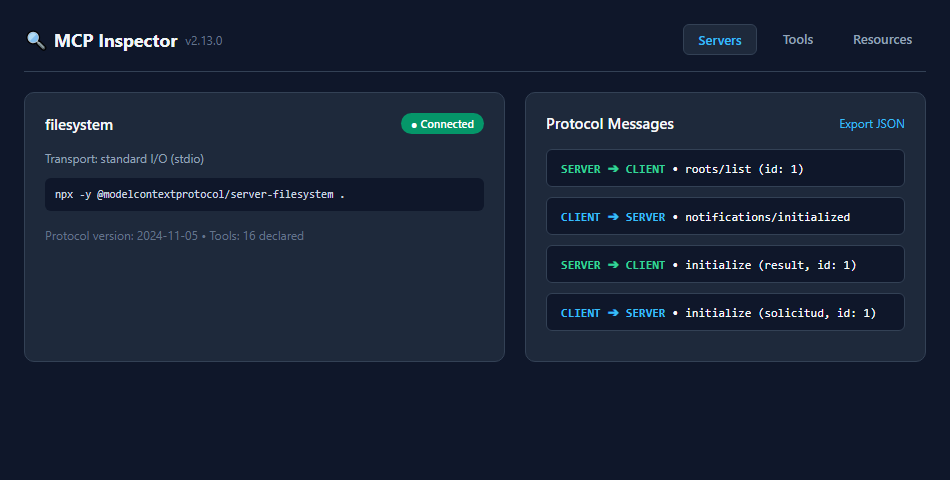
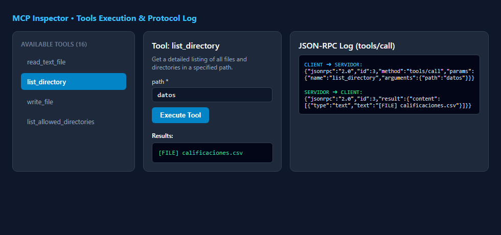

📖 Fundamentos de JSON-RPC 2.0 y MCP
Estándar Abierto
MCP no inventa un formato propio de serialización de mensajes: utiliza JSON-RPC 2.0 sobre flujos de entrada y salida estándar (stdio). Toda comunicación se basa en 3 únicos tipos de mensaje:
| Tipo | Campos obligatorios / opcionales | ¿Espera respuesta? | Propósito en MCP |
|---|---|---|---|
| Solicitud (Request) | jsonrpc, id, method, params? |
Sí (mismo id) | Consultar información o ejecutar acciones (initialize, tools/list, tools/call). |
| Respuesta (Response) | jsonrpc, id, result o error |
No aplica | Devolver el resultado o indicar fallo de protocolo. Emparejada por id. |
| Notificación (Notification) | jsonrpc, method, params? (Sin id) |
No | Avisos unidireccionales (*fire-and-forget*), ej. notifications/initialized. |
Ciclo de Vida de una Conexión MCP
1. Inicialización
Apretón de manos (*handshake*): El cliente envía initialize proponiendo versión y capacidades. El servidor responde con sus capacidades. El cliente confirma con notifications/initialized.
2. Operación
Descubrimiento con tools/list e invocaciones repetidas con tools/call enviando argumentos estructurados en JSON.
3. Cierre
El cliente cierra la entrada estándar del proceso hijo (servidor.stdin.end()). El servidor detecta el EOF y termina limpiamente.
🔍 Actividad A: Observar el Protocolo con MCP Inspector
Tool Oficial de Debugging
Se ejecutó npx -y @modelcontextprotocol/inspector --config mcp.json para inspeccionar visualmente cada mensaje de la sesión e interactuar a mano con el servidor server-filesystem.
Tabla de Mensajes Registrados (Orden Cronológico)
| # | Dirección | Método / Contenido | Tipo | ID |
|---|---|---|---|---|
| 1 | CLIENT ➔ SERVER | initialize (versión 2024-11-05, roots, sampling) | Solicitud | 1 |
| 2 | SERVER ➔ CLIENT | result (versión 2024-11-05, secure-filesystem-server 2.2.0) | Respuesta | 1 |
| 3 | CLIENT ➔ SERVER | notifications/initialized | Notificación | — |
| 4 | SERVER ➔ CLIENT | roots/list (Solicitud inversa del servidor) | Solicitud | 1 |
| 5 | CLIENT ➔ SERVER | result (URI de practica2-mcp) | Respuesta | 1 |
| 6 | CLIENT ➔ SERVER | tools/list | Solicitud | 2 |
| 7 | SERVER ➔ CLIENT | result (Catálogo de 16 herramientas disponibles) | Respuesta | 2 |
| 8 | CLIENT ➔ SERVER | tools/call (name: "list_directory", path: "datos") | Solicitud | 3 |
| 9 | SERVER ➔ CLIENT | result ("[FILE] calificaciones.csv") | Respuesta | 3 |
📸 Evidencias Gráficas del Inspector


💻 Actividad B: Un Cliente MCP Mínimo (70 Líneas)
Sin Dependencias Externas
Se construyó un cliente MCP puro en Node.js (cliente_mcp.mjs) comunicándose vía subproceso (spawn) y flujo JSON sobre stdin/stdout.
Traza Inicial de 7 Mensajes (`salida/traza.jsonl`)
| # | Dirección | Método / Contenido | Tipo | ID |
|---|---|---|---|---|
| 1 | CLIENTE ➔ SERVIDOR | initialize (versión 2025-06-18, clientInfo: cliente-minimo) | Solicitud | 1 |
| 2 | SERVIDOR ➔ CLIENTE | result (versión 2025-06-18, secure-filesystem-server 2.2.0) | Respuesta | 1 |
| 3 | CLIENTE ➔ SERVIDOR | notifications/initialized | Notificación | — |
| 4 | CLIENTE ➔ SERVIDOR | tools/list | Solicitud | 2 |
| 5 | SERVIDOR ➔ CLIENTE | result (16 tools expuestas con JSON Schema) | Respuesta | 2 |
| 6 | CLIENTE ➔ SERVIDOR | tools/call (list_directory datos) | Solicitud | 3 |
| 7 | SERVIDOR ➔ CLIENTE | result ([FILE] calificaciones.csv) | Respuesta | 3 |
Análisis de la herramienta `list_directory`:
- Descripción: Lista exhaustiva de nombres de ficheros y directorios en una ruta relativa permitida.
- inputSchema: Exige un único argumento obligatorio
path(string). - Anotaciones:
readOnlyHint: true(no altera el disco),idempotentHint: true(ejecución determinista),destructiveHint: false(segura).
🛡️ Actividad C: Ampliar la Conversación y Análisis de Errores
13 Mensajes en TrazaSe añadieron tres solicitudes al cliente: una lectura válida, una lectura prohibida y un método inventado. Las dos últimas fallan de maneras completamente distintas:
Llamada a read_text_file con path: "C:/Windows/win.ini".
{
"jsonrpc": "2.0",
"id": 5,
"result": {
"content": [
{
"type": "text",
"text": "Access denied - path outside allowed directories: C:\\Windows\\win.ini..."
}
],
"isError": true
}
}result con la bandera "isError": true. El método fue atendido por el servidor, pero la herramienta falló internamente.
Solicitud con método inventado herramientas/inventada.
{
"jsonrpc": "2.0",
"id": 6,
"error": {
"code": -32601,
"message": "Method not found"
}
}result. Devuelve la clave error con el código estándar JSON-RPC -32601 (Method not found).
⚖️ Actividad D: Comparar Dos Clientes y Experimento
Negociación de ProtocoloTabla Comparativa de Inicialización
| Característica | Inspector | Cliente Mínimo |
|---|---|---|
Nombre y versión del cliente (clientInfo) |
mcp-inspector v2.13.0 |
cliente-minimo v1.0.0 |
| Versión propuesta por el cliente | 2024-11-05 |
2025-06-18 |
| Versión respondida por el servidor | 2024-11-05 |
2025-06-18 |
| Capacidades declaradas por el cliente | roots: { listChanged: true }, sampling: {} |
{} (Vacío, sin capacidades opcionales) |
| ¿El servidor envió solicitud inversa? | Sí: roots/list (id: 1) | No (Usa allowlist de argumentos) |
🧪 Resultado del Experimento: `protocolVersion: '1999-01-01'`
Al configurar deliberadamente una versión obsoleta inexistente en el cliente, el servidor no arrojó un error de protocolo. En su lugar, el servidor respondió negociando su versión más moderna compatible: `2025-11-25`. Esto demuestra que MCP cuenta con negociación de protocolo resiliente hacia adelante y hacia atrás.
📊 Actividad E: Diagrama de Secuencia de la Sesión Completa
13 Mensajes • 3 Fases
Representación visual de la sesión de 13 mensajes de salida/traza.jsonl:
❓ Preguntas de Reflexión para la Discusión en Clase
Sección 10 del PDFid se emplea exclusivamente para correlacionar solicitudes con respuestas. Si un cliente esperara respuesta a una notificación, caería en un bloqueo indefinido (*deadlock*), dado que la especificación prohíbe explícitamente responder a mensajes que carecen de id.
result con "isError": true) contiene el mensaje descriptivo del fallo (por ejemplo, ruta inexistente o permiso denegado). Esto permite que el modelo de lenguaje (agente LLM) lea la explicación en su contexto conversacional para autocorregirse, ajustar sus parámetros o explicar el problema al usuario de forma natural.
stdio, la salida estándar (stdout) está reservada exclusivamente para el flujo de mensajes JSON-RPC serializados, exactamente uno por línea. Si un desarrollador usa console.log, inserta texto plano en stdout, provocando que el cliente falle con SyntaxError al ejecutar JSON.parse(). Los mensajes de depuración deben enviarse siempre a la salida de error (stderr con console.error).
tools/list: los nombres, descripciones y esquemas de parámetros para inyectarlos en su prompt del sistema.
2. El modelo genera el nombre y argumentos enviados en tools/call.
3. De las respuestas result: recibe el contenido (texto del archivo, listado o error controlado) como resultado de la función para continuar razonando.
roots, sampling, prompts), evitando errores en tiempo de ejecución y habilitando degradación elegante (*graceful degradation*).
COMANDO en la llamada a spawn (por ejemplo, reemplazando el paquete por @playwright/mcp o cualquier otro servidor). Toda la infraestructura de parsing JSON-RPC, correlación de IDs y manejo de promesas permanece 100% reutilizable.